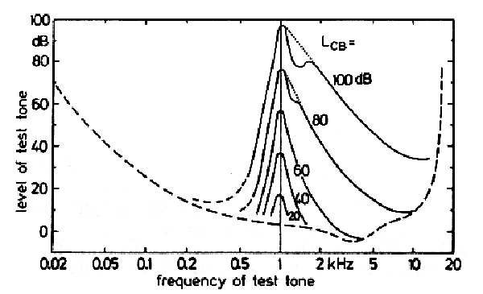

The HAS (Human Auditory System) has a finite frequency resolution, which basically means that a weaker audio signal (maskee) becomes inaudible in the presence of (is masked by) a louder audio signal (masker), when they are close enough [1], in the frequency domain (and obviously in time, i.e., in the same chunk). When this happens, the subband [2] in which the maskee signal is placed can be quantized more severely without perceiving the quantization noise in the maskee subband (see Figure 1).

Taking advantage of simultaneous masking involves adapting the quantizer step size \(\Delta _b\) (which is different in each subband \(b\)) to the energies of the subbands, and this can be difficult to do in real-time. Fortunately, modern computers can run multiple processes in parallel, and the relative energy between subbands doesn’t usually change drastically between chunks. Therefore, it’s possible to run the task of recalculating \(\Delta _b\) in a new thread/process, at a frequency that your machine allows.
Take into consideration also that the simultaneous masking effect can be computed considering a sliding window of adjacent chunks. This should provide a smoother transition between chunks.
Your implementation should take the following aspects into account:
A new InterCom layer written in a Python module named simultaneous_masking.py.
This file should be generated, explained and evaluated in a notebook named
simultaneous_masking.ipynb. Consider only the MDCT case.
[1] M. Bosi and R.E. Goldberd. Introduction to Digital Audio Coding and Standards. Kluwer Academic Publishers, 2003.
[2] M. Vetterli and J. Kovačević. Wavelets and Subband Coding. Prentice-hall, 1995.